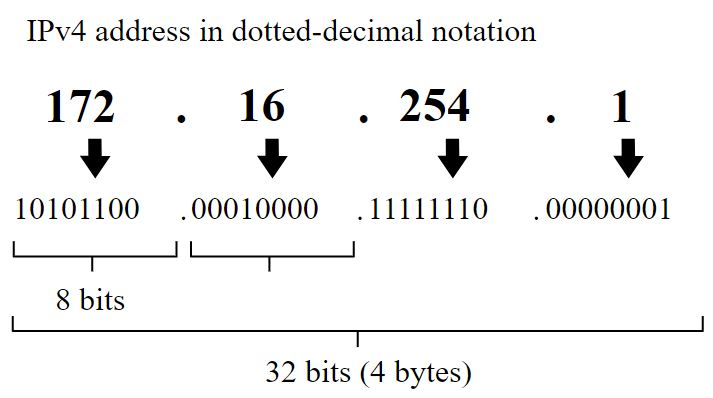
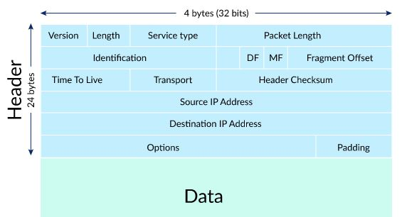
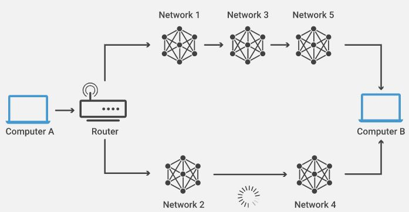

Internetwork Protocol Addresses or IP Addresses are uniquely assigned to each device connected to the internet. Similar to a home street addresses, an IP address is the address used to specifically identify every device. It is made up of numbers assigned by hierarchy and separated into four parts, each represented in bits. Every IP addresses is made up of 32 bits, 8 bits for each part of the address. The IPv4 was developed in the 1973 and then more commonly adopted in the 1980s, providing close to 4 billion unique address for every device connected to the internet. In an IPv4, the first set of numbers identify the country/network, followed by the region/network, then the subnetwork, and finally the identity of the device itself. Due to the large number of devices connected to the internet, programmers and engineers have developed the IPv6 which is made up of 128 bits, which will allow for very large amount of unique addresses.
Below is an example of an IPv4 address made up of a total of 32 bits broken down into its 4 sections, each containing 8 bits.
IP Packets contain a message or data that is being routed from a source to its receiving destination. The packet also contains the IP address of the data source as well as its destination address. It consists of a header section and a data section. The header section stores the IP addresses are stored and the protocol to be used in the data section of the packet. The data section stores the information being routed to its destination.

IP Routing is a set of protocols that determine the path of IP packets across numerous IP networks to its destination network. The router will refer to the routing tables within their software to decide the best possible path to route a packet towards its destination. The Transmission Control Protocol (TCP) manages sending and receiving of a packet. TCP ensures each packet has been received and sends and acknowledges receipt. If TCP realizes that a packet is missing any information, it will not receive it. TCP can be thought of as a guarantees mailing service.
To determine routing path: when a packet is received by a router, it will interpret the information it receives from the packet header. They do this through their routing protocols. A few of the most common routing protocols include:
Border Gateway Protocol (BGP) is the most dominant protocol used across the internet. It is used to announce which IP addresses and networks are connected to each other.
Routing Information Protocol (RIP) uses the hop count to determine the shortest path from one network to the next. The hop count is the number of networks packets must pass through.
Open Shortest Path First (OSPF) is used to identify the fastest and shortest available routes for sending packets across networks.
Exterior Gateway Protocol (EGP) is used to exchange routing information among neighboring gateway hosts such as routing table information like known routers, the address they can reach and associated paths.